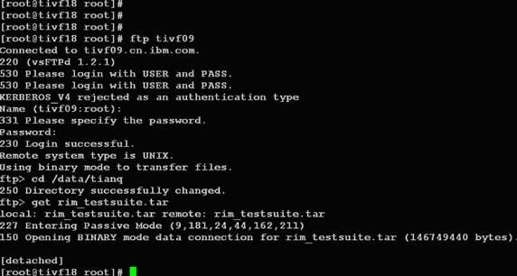

在 IBM Bluemix 云平台上开发并部署您的下一个应用。
你是不是经常需要 SSH 或者 telent 远程登录到 Linux 服务器？你是不是经常为一些长时间运行的任务而头疼，比如系统备份、ftp 传输等等。通常情况下我们都是为每一个这样的任务开一个远程终端窗口，因为他们执行的时间太长了。必须等待它执行完毕，在此期间可不能关掉窗口或者断开连接，否则这个任务就会被杀掉，一切半途而废了。
元凶：SIGHUP 信号
让我们来看看为什么关掉窗口/断开连接会使得正在运行的程序死掉。
在Linux/Unix中，有这样几个概念：
- 进程组（process group）：一个或多个进程的集合，每一个进程组有唯一一个进程组ID，即进程组长进程的ID。
- 会话期（session）：一个或多个进程组的集合，有唯一一个会话期首进程（session leader）。会话期ID为首进程的ID。
- 会话期可以有一个单独的控制终端（controlling terminal）。与控制终端连接的会话期首进程叫做控制进程（controlling process）。当前与终端交互的进程称为前台进程组。其余进程组称为后台进程组。
根据POSIX.1定义：
- 挂断信号（SIGHUP）默认的动作是终止程序。
- 当终端接口检测到网络连接断开，将挂断信号发送给控制进程（会话期首进程）。
- 如果会话期首进程终止，则该信号发送到该会话期前台进程组。
- 一个进程退出导致一个孤儿进程组中产生时，如果任意一个孤儿进程组进程处于STOP状态，发送SIGHUP和SIGCONT信号到该进程组中所有进程。
因此当网络断开或终端窗口关闭后，控制进程收到SIGHUP信号退出，会导致该会话期内其他进程退出。
我们来看一个例子。打开两个SSH终端窗口，在其中一个运行top命令。
[root@tivf09 root]# top
在另一个终端窗口，找到top的进程ID为5180，其父进程ID为5128，即登录shell。
[root@tivf09 root]# ps -ef|grep top root 5180 5128 0 01:03 pts/0 00:00:02 top root 5857 3672 0 01:12 pts/2 00:00:00 grep top
使用pstree命令可以更清楚地看到这个关系：
[root@tivf09 root]# pstree -H 5180|grep top |-sshd-+-sshd---bash---top
使用ps-xj命令可以看到，登录shell（PID 5128）和top在同一个会话期，shell为会话期首进程，所在进程组PGID为5128，top所在进程组PGID为5180，为前台进程组。
[root@tivf09 root]# ps -xj|grep 5128 5126 5128 5128 5128 pts/0 5180 S 0 0:00 -bash 5128 5180 5180 5128 pts/0 5180 S 0 0:50 top 3672 18095 18094 3672 pts/2 18094 S 0 0:00 grep 5128
关闭第一个SSH窗口，在另一个窗口中可以看到top也被杀掉了。
[root@tivf09 root]# ps -ef|grep 5128 root 18699 3672 0 04:35 pts/2 00:00:00 grep 5128
如果我们可以忽略SIGHUP信号，关掉窗口应该就不会影响程序的运行了。nohup命令可以达到这个目的，如果程序的标准输出/标准错误是终端，nohup默认将其重定向到nohup.out文件。值得注意的是nohup命令只是使得程序忽略SIGHUP信号，还需要使用标记&把它放在后台运行。
nohup <command> [argument…] &
虽然nohup很容易使用，但还是比较“简陋”的，对于简单的命令能够应付过来，对于复杂的需要人机交互的任务就麻烦了。
其实我们可以使用一个更为强大的实用程序screen。流行的Linux发行版（例如Red Hat Enterprise Linux 4）通常会自带screen实用程序，如果没有的话，可以从GNU screen的官方网站下载。
[root@tivf06 ~]# rpm -qa|grep screen xscreensaver-4.18-5.rhel4.11 screen-4.0.2-5
开始使用Screen
简单来说，Screen是一个可以在多个进程之间多路复用一个物理终端的窗口管理器。Screen中有会话的概念，用户可以在一个screen会话中创建多个screen窗口，在每一个screen窗口中就像操作一个真实的telnet/SSH连接窗口那样。在screen中创建一个新的窗口有这样几种方式：
1．直接在命令行键入screen命令
[root@tivf06 ~]# screen
Screen将创建一个执行shell的全屏窗口。你可以执行任意shell程序，就像在ssh窗口中那样。在该窗口中键入exit退出该窗口，如果这是该screen会话的唯一窗口，该screen会话退出，否则screen自动切换到前一个窗口。
2．Screen命令后跟你要执行的程序。
[root@tivf06 ~]# screen vi test.c
Screen创建一个执行vi test.c的单窗口会话，退出vi将退出该窗口/会话。
3．以上两种方式都创建新的screen会话。我们还可以在一个已有screen会话中创建新的窗口。在当前screen窗口中键入C-a c，即Ctrl键+a键，之后再按下c键，screen 在该会话内生成一个新的窗口并切换到该窗口。
screen还有更高级的功能。你可以不中断screen窗口中程序的运行而暂时断开（detach）screen会话，并在随后时间重新连接（attach）该会话，重新控制各窗口中运行的程序。例如，我们打开一个screen窗口编辑/tmp/abc文件：
[root@tivf06 ~]# screen vi /tmp/abc
之后我们想暂时退出做点别的事情，比如出去散散步，那么在screen窗口键入C-a d，Screen会给出detached提示：
暂时中断会话

半个小时之后回来了，找到该screen会话：
[root@tivf06 ~]# screen -ls
There is a screen on:
16582.pts-1.tivf06 (Detached)
1 Socket in /tmp/screens/S-root.重新连接会话：
[root@tivf06 ~]# screen -r 16582
看看出现什么了，太棒了，一切都在。继续干吧。
你可能注意到给screen发送命令使用了特殊的键组合C-a。这是因为我们在键盘上键入的信息是直接发送给当前screen窗口，必须用其他方式向screen窗口管理器发出命令，默认情况下，screen接收以C-a开始的命令。这种命令形式在screen中叫做键绑定（key binding），C-a叫做命令字符（command character）。
可以通过C-a ?来查看所有的键绑定，常用的键绑定有：
| C-a ? | 显示所有键绑定信息 |
|---|---|
| C-a w | 显示所有窗口列表 |
| C-a C-a | 切换到之前显示的窗口 |
| C-a c | 创建一个新的运行shell的窗口并切换到该窗口 |
| C-a n | 切换到下一个窗口 |
| C-a p | 切换到前一个窗口(与C-a n相对) |
| C-a 0..9 | 切换到窗口0..9 |
| C-a a | 发送 C-a到当前窗口 |
| C-a d | 暂时断开screen会话 |
| C-a k | 杀掉当前窗口 |
| C-a [ | 进入拷贝/回滚模式 |
Screen常用选项
使用键绑定C-a ?命令可以看到, 默认的命令字符（Command key）为C-a，转义C-a（literal ^a）的字符为a：
Screen 常用选项
因为screen把C-a看作是screen命令的开始，所以如果你想要screen窗口接收到C-a字符，就要输入C-a a。Screen也允许你使用-e选项设置自己的命令字符和转义字符，其格式为：
-exy x为命令字符，y为转义命令字符的字符
下面命令启动的screen会话指定了命令字符为C-t，转义C-t的字符为t，通过C-t ?命令可以看到该变化。
[root@tivf18 root]# screen -e^tt
自定义命令字符和转义字符
其他常用的命令选项有：
| -c file | 使用配置文件file，而不使用默认的$HOME/.screenrc |
|---|---|
| -d|-D [pid.tty.host] | 不开启新的screen会话，而是断开其他正在运行的screen会话 |
| -h num | 指定历史回滚缓冲区大小为num行 |
| -list|-ls | 列出现有screen会话，格式为pid.tty.host |
| -d -m | 启动一个开始就处于断开模式的会话 |
| -r sessionowner/ [pid.tty.host] | 重新连接一个断开的会话。多用户模式下连接到其他用户screen会话需要指定sessionowner，需要setuid-root权限 |
| -S sessionname | 创建screen会话时为会话指定一个名字 |
| -v | 显示screen版本信息 |
| -wipe [match] | 同-list，但删掉那些无法连接的会话 |
下例显示当前有两个处于detached状态的screen会话，你可以使用screen -r <screen_pid>重新连接上：
[root@tivf18 root]# screen –ls
There are screens on:
8736.pts-1.tivf18 (Detached)
8462.pts-0.tivf18 (Detached)
2 Sockets in /root/.screen.
[root@tivf18 root]# screen –r 8736如果由于某种原因其中一个会话死掉了（例如人为杀掉该会话），这时screen -list会显示该会话为dead状态。使用screen -wipe命令清除该会话：
[root@tivf18 root]# kill -9 8462
[root@tivf18 root]# screen -ls
There are screens on:
8736.pts-1.tivf18 (Detached)
8462.pts-0.tivf18 (Dead ???)
Remove dead screens with 'screen -wipe'.
2 Sockets in /root/.screen.
[root@tivf18 root]# screen -wipe
There are screens on:
8736.pts-1.tivf18 (Detached)
8462.pts-0.tivf18 (Removed)
1 socket wiped out.
1 Socket in /root/.screen.
[root@tivf18 root]# screen -ls
There is a screen on:
8736.pts-1.tivf18 (Detached)
1 Socket in /root/.screen.
[root@tivf18 root]#-d –m 选项是一对很有意思的搭档。他们启动一个开始就处于断开模式的会话。你可以在随后需要的时候连接上该会话。有时候这是一个很有用的功能，比如我们可以使用它调试后台程序。该选项一个更常用的搭配是：-dmS sessionname
启动一个初始状态断开的screen会话：
[root@tivf06 tianq]# screen -dmS mygdb gdb execlp_test
连接该会话：
[root@tivf06 tianq]# screen -r mygdb
管理你的远程会话
先来看看如何使用screen解决SIGHUP问题，比如现在我们要ftp传输一个大文件。如果按老的办法，SSH登录到系统，直接ftp命令开始传输，之后。。如果网络速度还可以，恭喜你，不用等太长时间了；如果网络不好，老老实实等着吧，只能传输完毕再断开SSH连接了。让我们使用screen来试试。
SSH登录到系统，在命令行键入screen。
[root@tivf18 root]# screen
在screen shell窗口中输入ftp命令，登录，开始传输。不愿意等了？OK，在窗口中键入C-a d：
管理你的远程会话
然后。。退出SSH登录？随你怎样，只要别杀掉screen会话。
是不是很方便？更进一步，其实我们可以利用screen这种功能来管理你的远程会话，保存你所有的工作内容。你是不是每次登录到系统都要开很多窗口，然后每天都要重复打开关闭这些窗口？让screen来帮你“保存”吧，你只需要打开一个ssh窗口，创建需要的screen窗口，退出的时候C-a d“保存”你的工作，下次登录后直接screen -r <screen_pid>就可以了。
最好能给每个窗口起一个名字，这样好记些。使用C-a A给窗口起名字。使用C-a w可以看到这些窗口名字，可能名字出现的位置不同。使用putty：
putty

使用telnet：
telnet

更多Screen功能
Screen提供了丰富强大的定制功能。你可以在Screen的默认两级配置文件/etc/screenrc和$HOME/.screenrc中指定更多，例如设定screen选项，定制绑定键，设定screen会话自启动窗口，启用多用户模式，定制用户访问权限控制等等。如果你愿意的话，也可以自己指定screen配置文件。
以多用户功能为例，screen默认是以单用户模式运行的，你需要在配置文件中指定multiuser on 来打开多用户模式，通过acl*（acladd,acldel,aclchg...）命令，你可以灵活配置其他用户访问你的screen会话。更多配置文件内容请参考screen的man页。
参考资料
- “Advanced Programming in the UNIX® Environment: Second Edition” W. Richard Stevens, Stephen A. Rago 提供了更多关于Linux/Unix进程关系、信号的知识。
- GNU Screen的官方网站：http://www.gnu.org/software/screen/
- Screen的man page提供了最详细的信息：http://www.slac.stanford.edu/comp/unix/package/epics/extensions/iocConsole/screen.1.html
条评论


IBM Bluemix 资源中心
文章、教程、演示，帮助您构建、部署和管理云应用。

developerWorks 中文社区
立即加入来自 IBM 的专业 IT 社交网络。

Bluemixathon 挑战赛
为灾难恢复构建应用，赢取现金大奖。
请 登录 或 注册 后发表评论。
注意：评论中不支持 HTML 语法